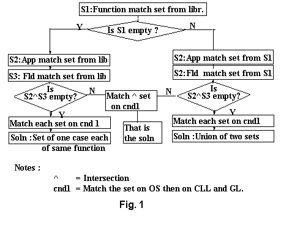

CASE BASED REASONING APPROACH TO CREATING USER INTERFACE COMPONENTS
Suneela R. Joshi* and William W. McMillan**
- *Creative Solutions, Inc.
- 4322 Newman Boulevard, Dexter, MI 48130
- **Department of Computer Science,
- Eastern Michigan University, Ypsilanti, MI 48197
- E-Mail Address : bill@emunix.emich.edu
ABSTRACT
Software developers can save time and expense by reusing code that implements user interface tools such as windows, menus, icons, dialogues, etc. Case Based Reasoning (CBR), developed for applications in artificial intelligence, is a very effective tool for such an interactive software reuse project. In CBR, a problem is solved by searching a library of previously encountered cases, retrieving similar cases and modifying them if necessary to fit the current problem. The approach taken by this paper goes beyond this usual CBR technique. It helps a developer to select an application menu from a set of menus that are appropriate for the developer's project. It then inserts that menu directly into the developer's project. This paper uses CBR in creating user interface objects to achieve software reuse in a very effective and simple way.
KEYWORDS:
User Interface Tools, Case Based Reasoning, Software Reuse.
INTRODUCTION
There is considerable research in CBR, i.e. methods of defining similarity, searching a case base, and modifying potential solutions. Also, extensive research has been done to propose different solutions to achieve software reuse, the most difficult practical challenge facing the software industry. According to Bassett, the key to improving productivity, maintainability, portability, and quality of software systems is progress in reuse technology[2]. Some study has been specifically done to provide developers with tools that can help them in designs using CBR. The case based software browser by Ockerman and Mitchell provides developers ways to access and use previous design experience[5]. Software design support techniques created using case based reasoning by Adachi, Kobayashi and Ohta provide detailed procedures that designers can follow in actual design work[1]. There has been much research in User Interface Management Systems that particularly deal with interface objects. Various tools which allow graphic layout of a user interface integrated with specification of behavior are available[4].
The concept proposed by this study is to use CBR in creating User Interface Objects(UIO), eliminating , coding and researching, for the best suitable interface components for a software application. The idea of creating user interface objects like dialog boxes, menus, scroll bars, icons, cursors, etc. is demonstrated in this design with the help of MESCA, MEnu browSer using Case bAsed reasoning.
A case based library consisting of various menus from different existing applications on different operating systems and in various fields was created. A user friendly screen gets input from the software developer about the type of application he/she is developing, its operating system, specific field, etc. Then a matching algorithm finds a set of intelligent matches. The user is then given an opportunity to choose the best menu from the retrieved cases. That solution is then linked directly into the developer's application program.
DESIGN
According to Domeshek and Kolodner, case based reasoning is a technique that combines a cognitive model describing how people use and reason from past experience and a technology for finding and presenting such experiences[3]. This technique of CBR has the following steps:
Finding Features of a Case of MESCA
After researching through many menus from different types of applications like word processing, spreadsheets, databases, compilers etc. on different operating systems and in different fields like Business, Education, Chemistry, Statistics, Mathematics etc. the following features were found suitable for this menu browser. These are features of a case :
- Function of the menu : e.g. File, Edit, Format, Help etc.
- Type of application of the software : e.g. Word Processing, Spreadsheet, Communication etc.
- Operating system on which the software is supposed to run : e.g. Windows95, DOS, Macintosh, UNIX etc.
- If the application is tailored to a specific field : e.g. Statistics, Mathematics, Chemistry etc.
- The degree to which the application is graphics oriented, on scale of 1 to 3.
- The level of computer literacy expected from the user of the software developed, on scale of 1 to 3.

Getting User Input
To simplify characterization of appropriate case features to the input problem and make the tool user friendly, a user interface was developed in which all input fields have pull down menus. Various choices for function of menu, type of application, operating system, tailored field, that are available in the library are already given to the user in pull down menus attached to the corresponding data entry fields for more user friendliness.
Indexing and Creating a Library of Cases
All the menus that were used in finding features of a case were the cases for the Menu Browser. They were converted into a library by assigning a unique index to each of the menu. For each case its features, namely the application, operating system and tailored field, were stored along with the index. Then a level 1-2-3 was given to the graphical interface used in the application in which the menu was found. Then depending on the ease of use of the application and a comparative analysis of different applications of the same type and on the same operating system a user computer literacy level 1-2-3 was given to each case. These two levels were also stored along with the index of the case. A second library of items in every menu was created in which the actual menu items and sub items were stored along with each index from the first library. While storing the menu items subgroups, sub menus and accelerators are also stored.
Finding a Set of Cases that best match input
There is a hierarchy of importance of case features. The function is the most important feature, followed by Application and Tailored field (if any). Then the Operating system of the software and in the end are Graphical level and Computer literacy level. The hierarchy was decided after studying various menus, finding similarities and differences between the menu items and sub items. Many different scenarios of user input was considered and solutions were found with different logical explanations. Then different solutions were evaluated from the practical point of view and an algorithm was developed. Fig.1 is a very brief review of the algorithm.
Software Reuse Aspect
The best matches would be presented to the developer, in the form of actual menu and sub menu items and the developer's choice would be linked directly into his/her application code.
RESULTS AND CONCLUSION
The system developed was tested by a few software developers. The response was very positive and importance of software reuse was stressed. The ease of this system was particularly liked and the idea of eliminating the research and coding involved was very much appreciated.
As per the main idea of the demonstration of the concept with menus, once the relevant cases are searched and the features of the cases and their hierarchical importance is decided the rest of algorithm is suitable for implementing any type of interface object.
REFERENCES
- Adachi, Hisato, Yoshizumi Kobayashaki and Tadashi Ohta. "Software Design Support using case based reasoning", Proceedings of the IEEE International Conference on Expert Systems for Development 1994, 85-90.
- Bassett P.G. "Frame Based Software Engineering", IEEE Software, July 1987, 9-16.
- Domeshek, E. A and Kolodner, J. L. "Toward a Case-Based Aid for Conceptual Design", International Journal of Expert Systems, 4(2), 201-220
- Martin Frank, J.J.Hans de Graaff, Daniel F.Gieskens and James D. Foley. "Building User Interfaces Interactively Using Pre-And Post Conditions", Proceedings of CHI-92, 641-642.
- Ockerman, J. J., Christine M. Mitchell and William J. Potter. "Case-Based Design to Aid Human Developers in Reuse of Previous Design Concepts", Proceedings of the 1994 IEEE International Conference on Systems, Man and Cybernetics, Vol. 2, 1757- 1762.